Lifted air parcels are constrained by the curves on the diagram. Unsaturated parcels follow dry adiabats upward until they become saturated, then they follow "moist" adiabats. A saturated parcel, if moving downward, follows a moist adiabat until it is no longer saturated, then if follows a dry adiabat (i.e., the parcel warms at a faster rate while sinking and unsaturated). In using "parcel theory" and this diagram to estimate various parameters, it is assumed that: 1) the condensed water is not carried with the parcel and all falls out, 2) the pressure of the lifted parcel adjusts immediately to the environment, 3) there are no sources or sinks of heat and moisture external to the lifted parcel, 4) and ice processes are ignored.
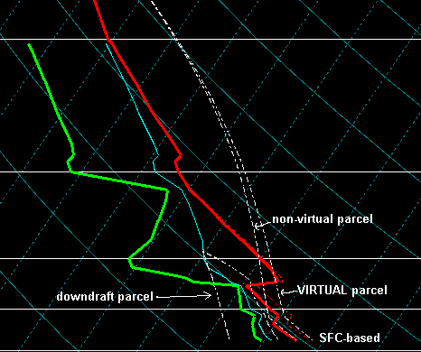
The SPC uses two different methods to calculate instability parameters - "virtual" parcels, and "non-virtual" parcels. The "virtual" parcel is used to calculate CAPE and LI on our web page, since it includes the effects of moisture on density via the virtual temperature. Operational experience suggests the "non-virtual" CIN and LFC values are more useful in forecasting convective initiation.
For additional information, please see:
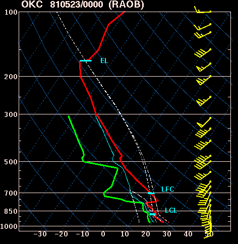
There is some confusion over which of these various parcel choices is most relevant to forecasting thunderstorms. Unfortunately, the science of meteorology is still inexact, and we just don't know! However, recent observational evidence suggests that late afternoon cumulus cloud base heights are best estimated using the ml parcel.
Craven, J. P., R. E. Jewell, and H. E. Brooks, 2002: Comparison between observed convective cloud base heights and lifting condensation level for two different lifted parcels. Wea. Forecasting, 17, 885-890.
LCL = lifting condensation level. This is the level at which a lifted parcel becomes saturated, and is a reasonable estimate of cloud base height when air parcels experience forced ascent. The LCL is this example is for the lifted surface parcel.
LFC = level of free convection. The LFC is the level at which a lifted parcel begins a free acceleration upward to the equilibrium level. Preliminary research suggests that tornadoes become more likely with supercells when LFC heights are less than 2,000 m above ground level, and thunderstorms are more easily initiated and maintained when LFC heights are lower than about 3,000 m. The LFC is this example is for the lifted surface parcel.
LFC-LCL = the height difference between the LFC and the LCL. The smaller the difference between the LCL and LFC, the more likely deep convection becomes.
EL= equilibrium level. The EL is the level at which a lifted parcel becomes cooler than the environmental temperature and is no longer buoyant (i.e., "unstable"). The EL is used primarily to estimate the height of a thunderstorm anvil. You may notice that the "virtual" and "non-virtual" lifted parcels both end up with the same EL. This happens because the virtual temperature converges to the actual temperature when temperatures are very cold (less than -20 C) and moisture effects become negligble.
Lapse Rates = the rate of temperature change with height. The faster temperature decreases with height, the "steeper" the lapse rate and more "unstable" the atmosphere becomes. The SPC graphics display the temperature lapse rates from 850-500 mb (roughly 4500 - 18,000 ft above sea level), and 700-500 mb (10,000 - 18,000 ft above sea level). Lapse rates are shown in terms of degrees Celcius change per kilometer in height. Values less than 5.5 - 6 Ckm-1 ("moist adiabatic") represent "stable" conditions, while values near 9.5 Ckm-1 (dry adiabatic) are considered "absolutely unstable". In between these two values, lapse rates are considered "conditionally unstable". Conditional instability means that if enough moisture is present, lifted air parcels could have a negative LI or positive CAPE.
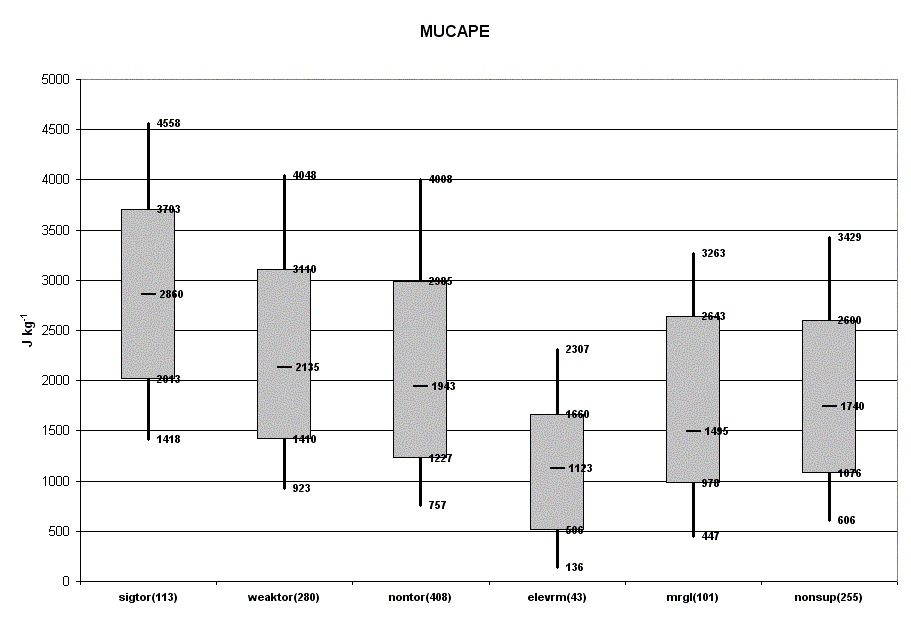
CAPE = Convective Available Potential Energy. CAPE is a measure of instability through the depth of the atmosphere, and is related to updraft strength in thunderstorms. SPC forecasters often refer to "weak instability" (CAPE less than 1000 Jkg-1), "moderate instability" (CAPE from 1000-2500 Jkg-1), "strong instability" (CAPE from 2500-4000 Jkg-1), and "extreme instability" (CAPE greater than 4000 Jkg-1). The CAPE in the sample sounding above is about 3500 Jkg-1 lifting the "non-virtual" surface parcel. In the real world, CAPE is usually an overestimate of updraft strength due to water loading and entrainment of unsaturated environmental air.
LI = Lifted Index. The lifted index is the temperature difference between the 500 mb temperature and the temperature of a parcel lifted to 500 mb. Negative values denote unstable conditions. LI is more of a measure of actual "instability" than CAPE because it represents the potential buoyancy of a parcel at a level, whereas CAPE is integrated through the depth of the troposphere. The LI is the sample sounding above is about -10 C, lifting the "non-virtual" surface parcel.
Normalized CAPE = CAPE divided by the depth of the layer where CAPE is present (units of m/s2). Normalized CAPE can be interpreted in much the same way as the LI (e.g., a "tall, skinny" CAPE gives a low normalized CAPE value and a small negative LI, while a "short, wide" CAPE gives a large normalized CAPE and larger negative LI.
Blanchard, D. O., 1998: Assessing the vertical distribution of convective available potential energy. Wea. Forecasting, 13, 870-877.
DCAPE = Downdraft CAPE. DCAPE can be used to estimate the potential strength of rain-cooled downdrafts with thunderstorms convection, and is similar to CAPE. Larger DCAPE values are associated with stronger downdrafts.
Gilmore, M.S., and L.J. Wicker, 1998: The influence of midtropospheric dryness on supercell morphology and evolution. Wea. Forecasting, 126, 943-958.
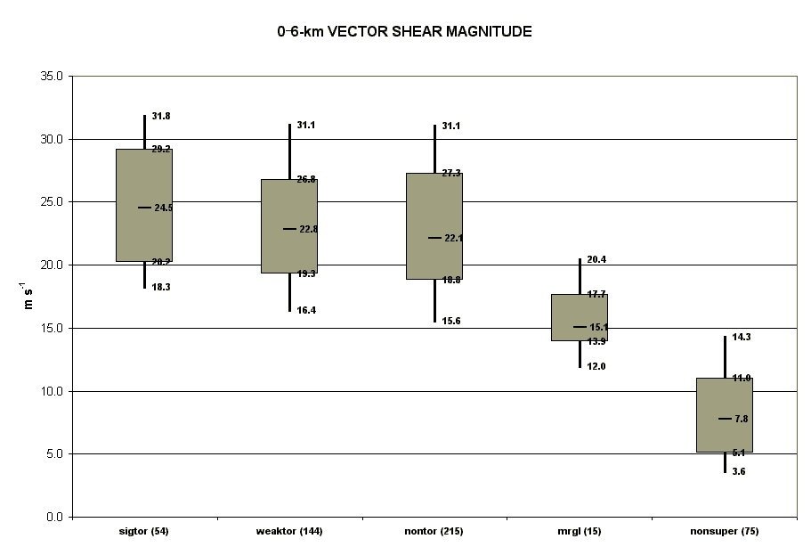
Weisman, M.L., 1996: On the use of vertical wind shear versus helicity in interpreting supercell dynamics. Preprints, 18th Conf. on Severe Local Storms, San Francisco, CA, Amer. Meteor. Soc., 200-204.
Rasmussen, E.N., and D.O. Blanchard, 1998: A baseline climatology of sounding-derived supercell and tornado forecast parameters. Wea. Forecasting, 13, 1148-1164.
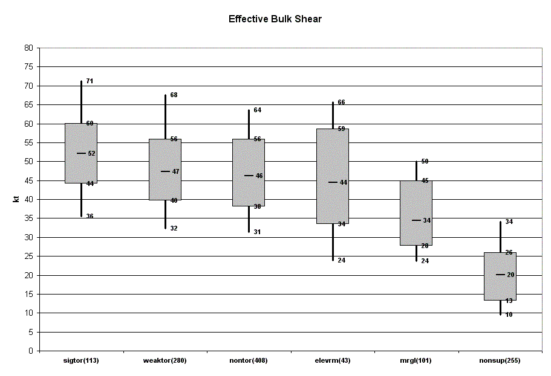
Thompson, R. L., C. M. Mead, and R. Edwards, 2003: Effective storm-relative helicity and bulk shear in supercell thunderstorm environments. Wea. Forecasting, 22, 102-115.
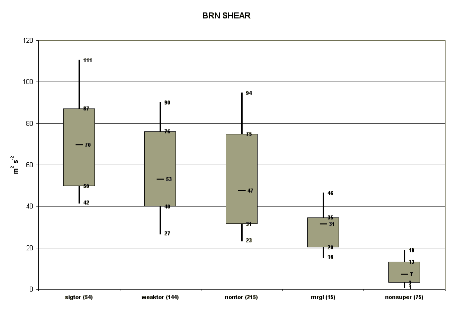
Weisman, M.L., and J.B. Klemp, 1982: The dependence of numerically simulated convective storms on vertical wind shear and buoyancy. Mon. Wea. Rev., 110, 504-520.
Stensrud, D.J., J.V. Cortinas Jr., and H.E. Brooks, 1997: Discriminating between tornadic and nontornadic thunderstorms using mesoscale model output. Wea. Forecasting, 12, 613-632.
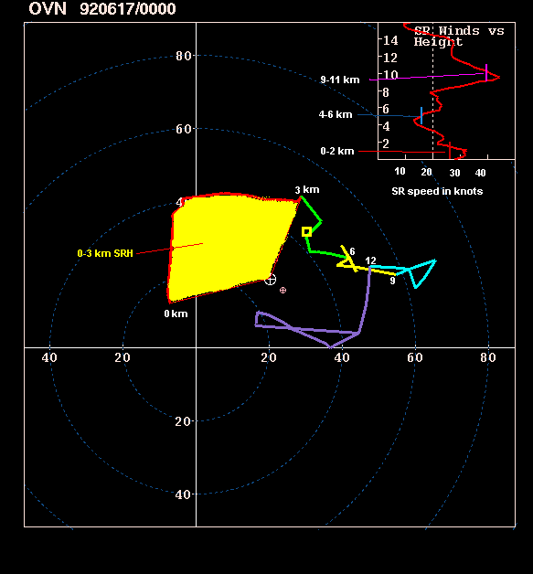
SRH = Storm-Relative Helicity. SRH is a measure of the potential for cyclonic updraft rotation in right-moving supercells, and is calculated for the lowest 1 and 3 km layers above ground level. There is no clear threshold value for SRH when forecasting supercells, since the formation of supercells appears to be related more strongly to the deeper layer vertical shear. However, larger values of 0-3 km SRH (greater than 250 m2s-2) and 0-1 km SRH (greater than 100 m2s-2) do suggest an increased threat of tornadoes with supercells. For SRH, larger is generally better, but there are no clear "boundaries" between nontornadic and significant tornadic supercells.
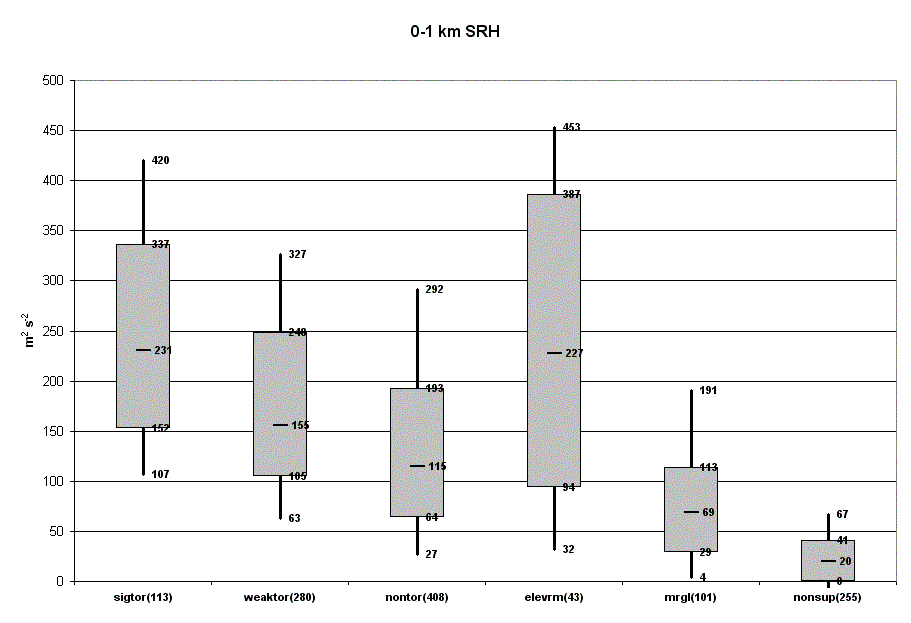
Davies-Jones, R.P., 1984: Streamwise vorticity: The origin of updraft rotation in supercell storms. J. Atmos. Sci., 41, 2991-3006.
Davies-Jones, R.P., D.W. Burgess, and M. Foster, 1990: Test of helicity as a forecast parameter. Preprints, 16th Conf. on Severe Local Storms, Kananaskis Park, AB, Canada, Amer. Meteor. Soc. 588-592.
Rasmussen, E.N., and D.O. Blanchard, 1998: A baseline climatology of sounding-derived supercell and tornado forecast parameters. Wea. Forecasing, 13, 1148-1164.
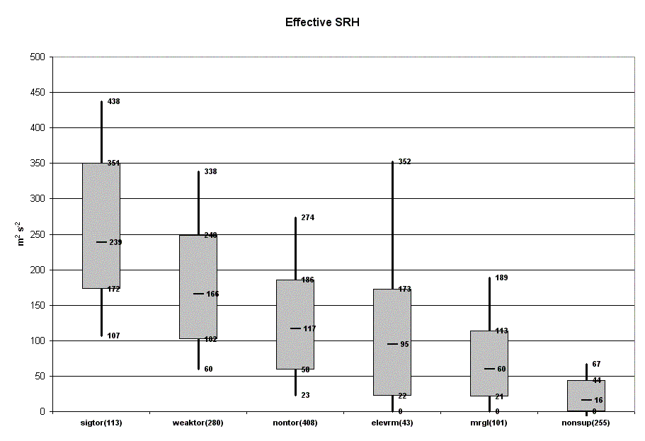
The 0-2 km SR winds are meant to represent low-level storm inflow. The majority of sustained supercells have 0-2 km storm inflow values of 15-20 kt or greater. The red vertical bar in the upper right inset shows the 0-2 km mean SR speed (see sample hodograph above).
Thompson, R. L., R. Edwards, J. A. Hart, K. L. Elmore, and P. Markowski, 2003: Close proximity soundings within supercell environments obtained from the Rapid Update Cycle. Wea. Forecasting, 18, 1243-1261.
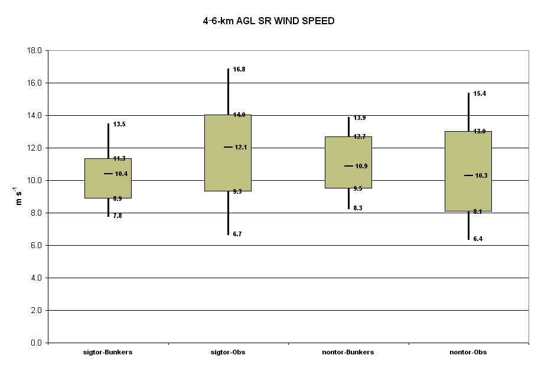
Rasmussen, E. N., and J.M. Straka, 1998: Variations in supercell morphology, Part I: Observations of the role of upper-level storm-relative flow. Mon. Wea. Rev., 126, 2406-2421.
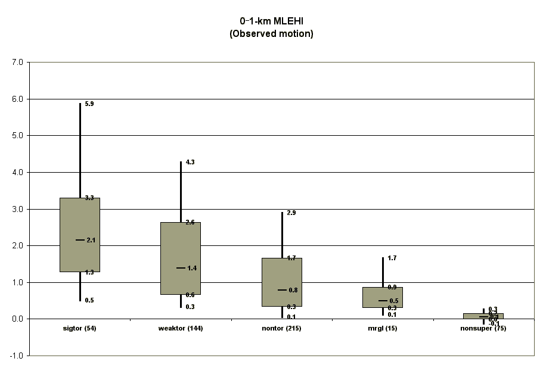
Hart, J.A., and W. Korotky, 1991: The SHARP workstation v1.50 users guide. National Weather Service, NOAA, US. Dept. of Commerce, 30 pp. [Available from NWS Eastern Region Headquarters, 630 Johnson Ave., Bohemia, NY 11716.]
Davies, J.M., 1993: Hourly helicity, instability, and EHI in forecasting supercell tornadoes. Preprints, 17th Conf. on Severe Local Storms, St. Louis, MO, Amer. Meteor. Soc., 107-111.
Rasmussen, E.N., and D.O. Blanchard, 1998: A baseline climatology of sounding-derived supercell and tornado forecast parameters. Wea. Forecasting, 13, 1148-1164.
Supercell Composite Parameter = a multi-parameter index that includes effective SRH, muCAPE, and effective bulk shear. Each parameter is normalized to supercell "threshold" values. Effective SRH is divided by 50 m2/s2, muCAPE is divided by 1000 J/kg, and effective bulk shear is divided by 20 m/s in the shear range of 10-20 m/s. Effective bulk shear less than 10 m/s is set to zero, and effective bulk shear greater than 20 m/s is set to one.
This index is formulated as follows:
SCP = (muCAPE / 1000 J/kg) * (ESRH / 50 m2/s2) * (ESHEAR / 20 m/s)
For example, an ESRH of 300 m2/s2, muCAPE of 3000 J/kg, and ESHEAR of 20 m/s results in a supercell composite index of 18.
The following "box and whiskers" graph shows the distribution of SCP values for proximity soundings derived from RAP model hourly analyses.
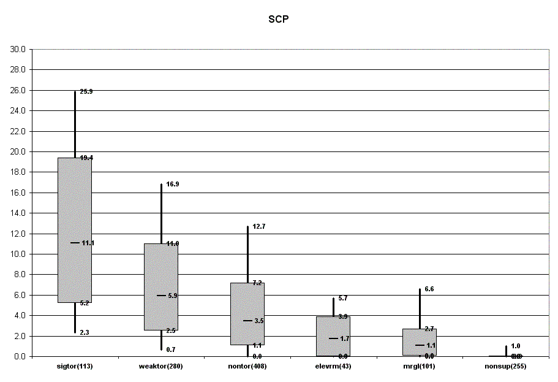
Thompson, R. L., R. Edwards, J. A. Hart, K. L. Elmore, and P. Markowski, 2003: Close proximity soundings within supercell environments obtained from the Rapid Update Cycle. Wea. Forecasting, 18, 1243-1261.
STP = (mlCAPE / 1500 J/kg) * ((2000 - mlLCL) / 1500 m) * (ESRH / 150 m2/s2) * (ESHEAR / 20 m/s)
A majority of significant tornadoes (F2 or greater damage) have been
associated with STP values greater than 1, while most nontornadic supercells
have been associated with vales less than 1 in a large sample of RAP analysis
proximity soundings.
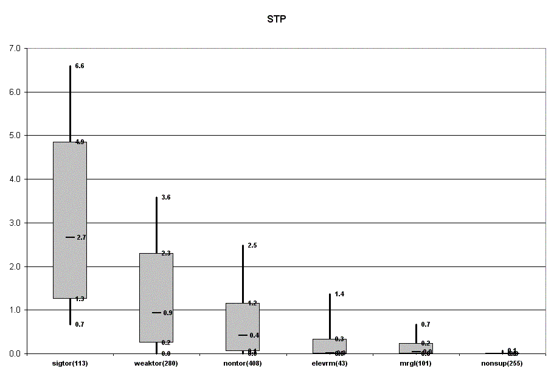
Thompson, R. L., R. Edwards, J. A. Hart, K. L. Elmore, and P. Markowski, 2003: Close proximity soundings within supercell environments obtained from the Rapid Update Cycle. Wea. Forecasting, 18, 1243-1261.
STPC = (mlCAPE / 1500 J/kg) * ((2000 - mlLCL) / 1500 m) * (ESRH / 150 m2/s2) * (ESHEAR / 20 m/s) * ((mlCIN + 200) / 150)
A majority of significant tornadoes (F2 or greater damage) have been
associated with STP values greater than 1, while most nontornadic supercells
have been associated with vales less than 1 in a large sample of RAP analysis
proximity soundings. Inclusion of the mlCIN term tends to reduce the size of
contoured areas, thus reducing false alarms.
Thompson, R. L., B. T. Smith, J. S. Grams, A. R. Dean, and C. Broyles, 2012: Convective modes for significant severe thunderstorms in the contiguous United States. Part II: Supercell and QLCS tornado environments. Wea. Forecasting, 27, 1136-1154.